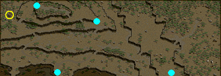

Chapter 5 果てしない対立
| Part1 選択 | 1 |
| Part2 RED STONEを選択した所へ | 1 2 |
| Part3 RED STONE完成への旅 | 1 |
| 報酬一覧 | 性向によるボーナス/ペナルティ 天上界 地下界 赤い悪魔 |
| Part1 選択 | |
|---|---|
| 1. 選択 | |
とりあえず山荘の外を散歩しながら、RED STONEをどちらへ渡すか考えよう。天上界に渡す場合は、タトバ山の秘密の山荘にいるアイノ・ガスピル会長の所へ。地下界や赤い悪魔に渡す場合は、ブリッジヘッドから船に乗って、ボルティッシュにいるアンジーの所に行ってみよう。 |
|
| 受諾場所 | 秘密の山荘 アイノ・ガスピル（11.13） |
| 受諾条件 | Lv245 |
| 報酬 | - |
| タトバ山 | 一旦、外へ出た後、RED STONEを渡す相手によって3ルートに分岐する。 天上界 → 秘密の山荘 アイノ・ガスピル（11.13） → RED STONEを天上界に 地下界 → 港町ボルティッシュ アンジー（6.66） → RED STONEを地下界に 赤い悪魔 → 港町ボルティッシュ アンジー（6.66） → RED STONEを赤い悪魔に 冒険家協会バーのデーボラ（45.22）から秘密の山荘の前と港町ボルティッシュへワープできる。 |
| Part2 RED STONEを選択した所へ | |
|---|---|
| 1. RED STONEを天上界に | |
ハイムダルがいるビフレスト橋へ行こう。ビフレスト橋は、グレートフォレスト ネイブ滝付近から北方面に隠された道にあるそうだ。 壊れた道に隠されている‘聖なる懺悔の部屋’を探し、そこにいるセーラにハイムダルの手紙を届けよう。 ハイムダルに会い行こう。 |
|
| 受諾場所 | 秘密の山荘 アイノ・ガスピル（11.13） |
| 受諾条件 | Lv245 |
| 報酬 | - |
| ビフレスト橋の前 | 1回目 ハイムダル（54.71）へ |
| 壊れた道 | Lv250以上で秘密ダンジョン 聖なる懺悔の部屋 セーラへ |
| ビフレスト橋の前 | ハイムダルへ、天上界へワープ |
| 2. 天上界の褒美 | |
ビフレスト橋を渡って天上界に行こう。 フォゲルネストのオニトルロ天使に会いに行こう。 テマヌエル天使のところに行き、天上界の褒美をもらった後、仲間たちがいるアジトに戻ろう。 アイノ・ガスピルの所へ行き、天上界を訪ねてきた事を教えてあげよう。 |
|
| 受諾場所 | ビフレスト橋の前 ハイムダル（54.71） |
| 受諾条件 | Lv245 |
| 報酬 | 天上界報酬 RED STONE抽出機 善悪値+10 |
| 天上界 | ミニマップ表示不可、場所記憶不可 ◆アノリス（10.20）へ  |
| フォゲルネスト | ミニマップ表示不可、場所記憶不可 ◆オニトルロ（48.27）へ ◆テマヌエル（15.22）へ、報酬を選択 |
| 天上界 | ◆天上界精鋭兵（51.71）へ、ビフレスト橋の前へワープ |
| ログハウス | ヴォルフラムへ ここでRED STONE抽出機を入手、永遠に残る。  |
| タトバ山 | 小屋（9.34）をクリック、秘密の山荘へワープ  |
| 秘密の山荘 | アイノ・ガスピル（11.13）へ |
| 1. 力の均等のために | |
ハイムダルがいるビフレスト橋へ行こう。ビフレスト橋は、グレートフォレスト ネイブ滝付近から北方面に隠された道にあるそうだ。 壊れた道に隠されている‘聖なる懺悔の部屋’を探し、そこにいるセーラにハイムダルの手紙を届けよう。 セーラに会い ハイムダルの手紙を渡した。セーラからもらった手紙をハイムダルの所に持っていこう。 手に入れたRED STONEをオニトルロ天使のもとに届けよう。 RED STONEを天上界まで持ってきたので、それに相応しい褒美をもらいにテマヌエル天使に会いに行こう。 |
|
| 受諾場所 | 秘密の山荘 アイノ・ガスピル（11.13） |
| 受諾条件 | Lv245 |
| 報酬 | 天上界報酬 善悪値+10 |
| ビフレスト橋の前 | 2回目以降 ハイムダル（54.71）へ |
| 壊れた道 | Lv250以上で秘密ダンジョン 聖なる懺悔の部屋 セーラへ |
| ビフレスト橋の前 | ハイムダルへ、天上界へワープ |
| フォゲルネスト | ミニマップ表示不可、場所記憶不可 ◆オニトルロ（48.27）へ ◆テマヌエル（15.22）へ、報酬を選択 |
| 1. RED STONEを地下界に | |
ジェイブ島のブラックファイヤーダンジョンに行ってケルベロスを倒した後、地下界へ入り、ガイルートに会いに行こう。 バルラレルに会って、地下界の褒美をもらおう。 仲間たちがいるアジトに戻ろう。 |
|
| 受諾場所 | 港町ボルティッシュ アンジー（6.66） |
| 受諾条件 | Lv245 |
| 報酬 | 地下界報酬 RED STONE抽出機 善悪値-10 |
| 異空間 | 1回目 港町ボルティッシュ←←→←ブラックファイヤーダンジョンを通って異空間へ  ブラックファイヤーダンジョンと異空間はミニマップ表示不可、場所記憶不可 ケルベロス（Lv275)Zinを倒す、地下界の町へワープ |
| 地下界の町 | ミニマップ表示不可、場所記憶不可 ◆ガイルート（33.18）へ ◆バルラレル（22.62）へ、報酬を選択 ◆地上の案内人（13.73）へ、外へワープ |
| ログハウス | ヴォルフラムへ ここでRED STONE抽出機を入手、永遠に残る。 |
| 1. 絶対強者になるために | |
ジェイブ島のブラックファイヤーダンジョンに行ってケルベロスを追い出した後、ガイルートにRED STONEを渡そう。 褒美をもらうためにバルラレルに会いに行こう。 |
|
| 受諾場所 | 港町ボルティッシュ アンジー（6.66） |
| 受諾条件 | Lv245 |
| 報酬 | 地下界報酬 善悪値-10 |
| 異空間 | 2回目以降 ミニマップ表示不可、場所記憶不可 ケルベロス（Lv275)Zinを倒す、地下界の町へワープ |
| 地下界の町 | ミニマップ表示不可、場所記憶不可 ◆ガイルート（33.18）へ ◆バルラレル（22.62）へ、報酬を選択 ◆地上の案内人（13.73）へ、外へワープ |
| 1. RED STONEを赤い悪魔に | |
ケルベロスを追い出した後、地下界の町に行こう。そして 深淵の案内者に通行料を払った後、ブラックファイヤーダンジョンのより深い深淵を通り抜け、赤い悪魔であるバイルと会って話をしよう。 ロシペルとの会話を終えたら、バイルと会って褒美をもらおう。 仲間たちがいるアジトに戻ろう。 |
|
| 受諾場所 | 港町ボルティッシュ アンジー（6.66） |
| 受諾条件 | Lv245 |
| 報酬 | 赤い悪魔報酬 RED STONE抽出機 |
| 異空間 | 1回目 港町ボルティッシュ←←→←ブラックファイヤーダンジョンを通って異空間へ ブラックファイヤーダンジョンと異空間はミニマップ表示不可、場所記憶不可 ケルベロス（Lv275)Zinを倒す、地下界の町へワープ |
| 地下界の町 | ミニマップ表示不可、場所記憶不可 ◆深淵の案内人（8.73）へ、 50万G払ってブラックファイヤーダンジョンの深淵へワープ |
| ロシペル城 | ミニマップ表示不可、場所記憶不可 ◆バイル（19.38）へ ◆ロシペル（43.16）へ ◆バイルへ、報酬を選択 ◆地上の案内人（10.36）へ、外へワープ |
| ログハウス | ヴォルフラムへ ここでRED STONE抽出機を入手、永遠に残る。 |
| 1. 新しい世界のために | |
ケルベロスを追い出した後、地下界の町に行こう。そして、深淵の案内者に通行料を払った後、ブラックファイヤーダンジョンのより深い深淵を渡り、赤い悪魔であるバイルに会ってRED STONEを渡そう。 ロシペルとの会話を終えたら、バイルに会って褒美をもらおう。 |
|
| 受諾場所 | 港町ボルティッシュ アンジー（6.66） |
| 受諾条件 | Lv245 |
| 報酬 | 赤い悪魔報酬 |
| 異空間 | 2回目以降 ミニマップ表示不可、場所記憶不可 ケルベロス（Lv275)Zinを倒す、地下界の町へワープ |
| 地下界の町 | ミニマップ表示不可、場所記憶不可 ◆深淵の案内人（8.73）へ、 50万G払ってブラックファイヤーダンジョンの深淵へワープ |
| ロシペル城 | ミニマップ表示不可、場所記憶不可 ◆バイル（19.38）へ ◆ロシペル（43.16）へ ◆バイルへ、報酬を選択 ◆地上の案内人（10.36）へ、外へワープ |
| Part3 RED STONE完成への旅 | |
|---|---|
| 1. 新しいRED STONEの完成 | |
RED STONEのかけら50個を手に入れたら、仲間たちがいるアジトに戻ろう。 RED STONEの完全体を作るためには、廃坑B4のマーブルガゴイルからマーブルガゴイルの羽根を10枚、半島の海辺に棲息するビッグシェルからビッグシェルの甲羅を10個、オロイン森のクローラーからクローラーの抜け殻汁を15滴ほど手に入れよう。 農村ラカリフサ北方の洞窟にいる変異スパイダーを利用し、魔法の液体の材料である蜘蛛の糸を1つ手に入れよう。 仲間たちがいるアジトに戻ってRED STONEの完全体を作り、 RED STONE抽出機を修理しよう。 RED STONEを天上界に届ける場合は、タトバ山の秘密の山荘にいるアイノ・ガスピル会長の所へ。地下界や赤い悪魔に渡す場合は、ブリッジヘッドから船に乗って、ボルティッシュにいるアンジーの所に行ってみよう。 |
|
| 受諾場所 | 秘密の山荘 アイノ・ガスピル（11.13） フォゲルネスト テマヌエル（15.22） ログハウス ヴォルフラム 地下界の町 バルラレル（22.62） ロシペル城 バイル（19.38） |
| 受諾条件 | Lv245 |
| 報酬 | RED STONE |
| ログハウス | 本体Lv-49以上のモンスターを倒して、RED STONEのかけら50個を集める ヴォルフラムへ |
| 廃坑 Ｂ４ | マーブルガゴイル（Lv55）を倒す 材料は冒険家協会バーのレム（40.19）から購入することもできる。 マーブルガゴイルの羽 1万G/個 ビッグシェルの甲羅 1万G/個 クローラーの抜け殻汁 1万G/個 蜘蛛の糸 5万G/個 合計 40万G |
| 半島の海辺 | ビッグシェル（Lv78）を倒す |
| オロイン森 | クローラー（Lv115）を倒す |
| ラカリフサ北の洞窟 | 変異スパイダー（Lv255）を倒す |
| ログハウス | RED STONE抽出機の期日から1週間と1分後に、ファーブへ 2-1へ戻り、以降その繰り返し 天上界 → 秘密の山荘 アイノ・ガスピル（11.13） → 力の均等のために 地下界 → 港町ボルティッシュ アンジー（6.66） → 絶対強者になるために 赤い悪魔 → 港町ボルティッシュ アンジー（6.66） → 新しい世界のために 冒険家協会バーのデーボラ（45.22）から秘密の山荘の前と港町ボルティッシュへワープできる。 |
報酬一覧
各ワールドごとにRED STONEを渡した個数が最も多い世界が優勢となり、性向ボーナス/ペナルティが変化する。
※アイテム購入時の価格割引は、チャームによる割引後の価格から更に割引適用。
ギルドホールのNPCには適用されない。